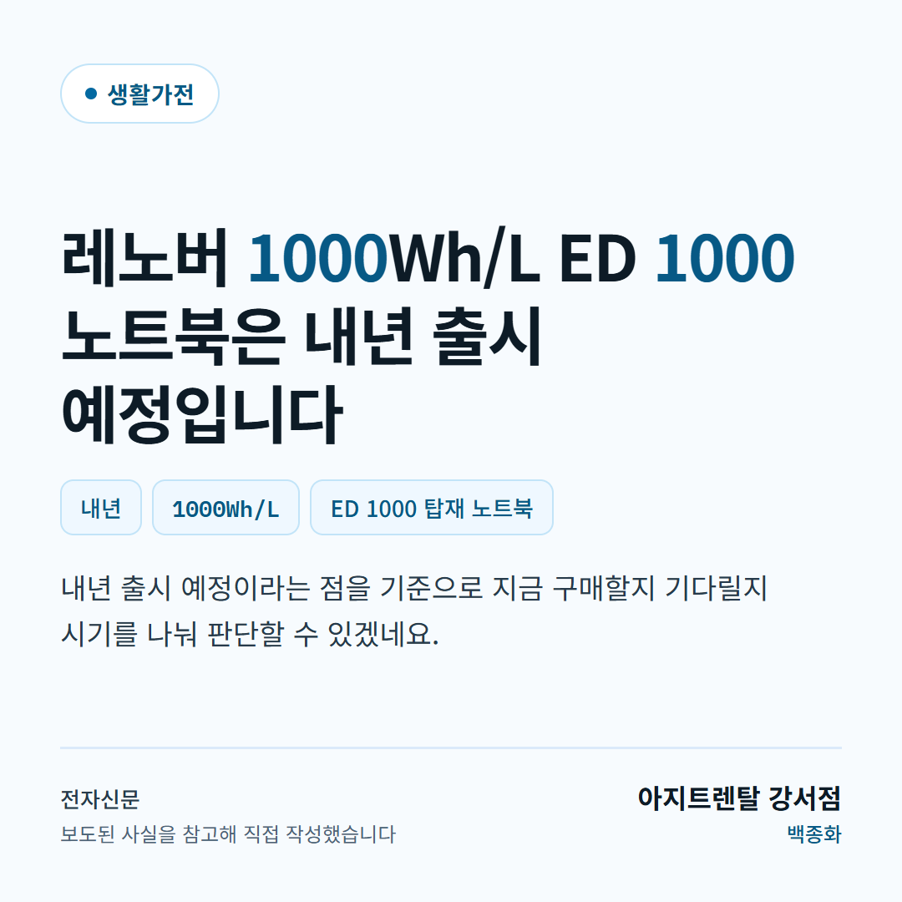

콘텐츠 자동 준비 다뿌려
뉴스 수집부터 채널별 문구와 이미지 준비까지 자동으로 처리하고, 게시 전 최종 결과를 확인합니다.
페북·쓰레드 하단 링크ap2c75.github.io/ra-preview/copy/l/sample01-internet/ 복사
✓ 실제로 동작합니다.
오늘 실제 실행 · 2026-09-11 06:28 UTC · openai gpt-5.6-luna · 키 sk-pr••••oZ4A · AI 호출 4회(실패 0) · 토큰 2760/1285 · 수집 38 → 주제 안 2 → 통과 1 (보류 1) · 말투 검사 2 건 · 매체 전자신문 · 지디넷코리아 · 컨슈머타임스
간편 자동
직접 편집
간편 자동
새 기사 1건을 골라 채널별 문구를 만들고 이미지를 연결합니다. 게시 전에는 반드시 최종 확인 화면이 열립니다.
기본 플랫폼
Threads · Instagram · Facebook
이미지
이미지 형식 자동모델·「이미지 없이」를 고를 수 있습니다
이미지 준비 방식 이미지 없이 (비용 0) AI 새 이미지 · Gemini 3.6 Flash (저렴) AI 새 이미지 · Gemini 3 Pro Image (고비용) 보관함 이미지 재사용
이미지 형태 자동 선택 피드 1:1 릴스용 세로 9:16
🔴 원본은 이미지 선택지가 Gemini 3 Pro Image 하나뿐 이라 관리자가 싼 모델로 바꿔도 비싼 모델로 고정 호출됐습니다. 「이미지 없이」도 없었습니다.
실시간 뉴스
소재를 직접 고릅니다. 취급 품목과 관련 없는 기사는 고를 수 없습니다.
선택 기사 글 만들기 (0) 고를 수 있는 것 전체 선택 선택 해제 고를 수 있는 기사 2 / 전체 5
오텍캐리어, 서울 도심 10MW 이하 데이터센터 공략한다 원문 ↗ 전자신문 · 09-11 03:01 · — 주제 밖 — 취급 품목과 관련이 없어 버렸습니다 귀뚜라미, 과학 인재 키운다... DGIST·GIST·UNIST에 장학금 2억원 쾌척 원문 ↗ 전자신문 · 09-11 02:58 · — 주제 밖 — 취급 품목과 관련이 없어 버렸습니다 레노버, '실리콘 음극재' 노트북 최초 출시…PC 배터리 혁신 원문 ↗ 전자신문 · 09-10 07:00 · 생활가전 [생활가전] 취급 품목 — 고를 수 있습니다 바디프랜드, 신세계백화점 강남점 '건강수명충전소' 운영 원문 ↗ 전자신문 · 09-10 05:34 · — 주제 밖 — 취급 품목과 관련이 없어 버렸습니다 포유디지탈, 아이뮤즈 태블릿으로 페이퍼리스 ESG 시장 공략 원문 ↗ 전자신문 · 09-10 05:32 · — 주제 밖 — 취급 품목과 관련이 없어 버렸습니다 “가스 없이 데운다”…LG전자 히트펌프+버퍼탱크, 유럽서 첫발 원문 ↗ 전자신문 · 09-10 01:54 · — 주제 밖 — 취급 품목과 관련이 없어 버렸습니다 삼성전자서비스, 현금 없는 서비스센터 시범 운영…전국 확대 시행 예정 원문 ↗ 전자신문 · 09-10 01:21 · — 주제 밖 — 취급 품목과 관련이 없어 버렸습니다 제품 대신 '집' 판다...AI 전면에 내세운 LG전자 로테르담 매장, 매출 20%↑ 원문 ↗ 전자신문 · 09-10 01:00 · — 주제 밖 — 취급 품목과 관련이 없어 버렸습니다 삼성전자, 히트펌프 전담 교육장 운영…설치·서비스 전문성 강화 원문 ↗ 전자신문 · 09-10 00:52 · — 주제 밖 — 취급 품목과 관련이 없어 버렸습니다 롯데백화점 안산점에 '코웨이갤러리' 오픈…오프라인 체험 접점 확대 원문 ↗ 전자신문 · 09-10 00:47 · 생활가전 [생활가전] 취급 품목 — 고를 수 있습니다 다올티에스, 델 데스크톱·모니터 구매 고객 대상 특별 프로모션 진행 원문 ↗ 전자신문 · 09-10 00:04 · — 주제 밖 — 취급 품목과 관련이 없어 버렸습니다 코웨이라이프솔루션-웰케어스테이션, '장기요양 고객 돌봄 부담 낮춘다' 원문 ↗ 전자신문 · 09-09 09:00 · — 주제 밖 — 취급 품목과 관련이 없어 버렸습니다 코스맥스, 바쿠치올 활용 스틱형 주름개선 기능성 화장품 허가 획득 원문 ↗ 전자신문 · 09-11 05:29 · — 주제 밖 — 취급 품목과 관련이 없어 버렸습니다 조선호텔앤리조트, ISMS 인증 획득…정보보호 체계 인정 원문 ↗ 전자신문 · 09-11 05:12 · — 주제 밖 — 취급 품목과 관련이 없어 버렸습니다 LCK 결승부터 오버워치 월드컵까지…치지직 'e스포츠 주말' 개최 원문 ↗ 전자신문 · 09-11 05:08 · — 주제 밖 — 취급 품목과 관련이 없어 버렸습니다 카카오 노조 “인적분할 충분한 설명 필요”…또 다시 대치 예고 원문 ↗ 전자신문 · 09-11 04:16 · — 주제 밖 — 취급 품목과 관련이 없어 버렸습니다 크리에이트립, 연내 마이리얼트립 자회사로 편입 원문 ↗ 전자신문 · 09-11 03:39 · — 주제 밖 — 취급 품목과 관련이 없어 버렸습니다 봄·가을만 여는 '간송미술관', 네이버랩스 VR 투어로 상시 관람 원문 ↗ 전자신문 · 09-11 03:23 · — 주제 밖 — 취급 품목과 관련이 없어 버렸습니다 카카오툴즈, 외부 서비스 17개로 확대…자체 서비스 추월 원문 ↗ 전자신문 · 09-11 03:08 · — 주제 밖 — 취급 품목과 관련이 없어 버렸습니다 하프클럽, AI로 '발견형·실감형 커머스' 도입…쇼핑 탐색·경험 고도화 원문 ↗ 전자신문 · 09-11 02:37 · — 주제 밖 — 취급 품목과 관련이 없어 버렸습니다 배민, 글로벌 스타트업에 성장 노하우 공유 원문 ↗ 전자신문 · 09-11 02:29 · — 주제 밖 — 취급 품목과 관련이 없어 버렸습니다 BGF리테일, 임직원·가맹점주 함께 '독도 사랑 후원 행사' 실시 원문 ↗ 전자신문 · 09-11 02:23 · — 주제 밖 — 취급 품목과 관련이 없어 버렸습니다 식품산업협회, 에너지공단과 맞손…공장 태양광·에너지효율 높인다 원문 ↗ 전자신문 · 09-11 02:15 · — 주제 밖 — 취급 품목과 관련이 없어 버렸습니다 29CM, '이구홈 서울숲' 오픈…오프라인 거점 서울숲으로 확장 원문 ↗ 전자신문 · 09-11 02:13 · — 주제 밖 — 취급 품목과 관련이 없어 버렸습니다 IBK기업은행, 키자니아에 어린이 금융 직업체험관 개점 원문 ↗ 전자신문 · 09-11 06:02 · — 주제 밖 — 취급 품목과 관련이 없어 버렸습니다 솔루엠, '2026 대한민국 ESG소비자 브랜드 대상' 친환경스마트기술대상 수상 원문 ↗ 전자신문 · 09-11 05:58 · — 주제 밖 — 취급 품목과 관련이 없어 버렸습니다 KB금융, 'KB이노베이션허브 IR 데이' 개최…스타트업 투자 유치 지원 원문 ↗ 전자신문 · 09-11 05:49 · — 주제 밖 — 취급 품목과 관련이 없어 버렸습니다 엑스온, SEO·AEO 다음 단계 'GEO 컨설팅' 정의와 수행 범위 공개 원문 ↗ 전자신문 · 09-11 05:32 · — 주제 밖 — 취급 품목과 관련이 없어 버렸습니다 원격조종 넘어 '자율행동'으로… 인티그리트, 로봇의 피지컬 AI 플랫폼 '에어패스' 공급 확대 원문 ↗ 전자신문 · 09-11 05:27 · — 주제 밖 — 취급 품목과 관련이 없어 버렸습니다 [알림] “세상을 바꾸는 금융혁신의 주연을 찾습니다” 원문 ↗ 전자신문 · 09-11 05:10 · — 주제 밖 — 취급 품목과 관련이 없어 버렸습니다 토스인사이트 “AI 에이전트, 금융상품 선택 구조 바꾼다” 원문 ↗ 전자신문 · 09-11 04:55 · — 주제 밖 — 취급 품목과 관련이 없어 버렸습니다 USPTO, 2027년 니스분류 개정 반영…미국 상표 출원 기준 일부 정비 원문 ↗ 전자신문 · 09-11 04:48 · — 주제 밖 — 취급 품목과 관련이 없어 버렸습니다 DB손해보험, '보통의 하루' 담은 기업PR 광고 선봬 원문 ↗ 전자신문 · 09-11 04:45 · — 주제 밖 — 취급 품목과 관련이 없어 버렸습니다 티머니모빌리티, 서울 택시업계와 로보택시 상용화 기반 마련 원문 ↗ 전자신문 · 09-11 04:43 · — 주제 밖 — 취급 품목과 관련이 없어 버렸습니다 코아스, 39억 규모 사무가구 공급계약 …연내 공급 원문 ↗ 전자신문 · 09-11 04:40 · — 주제 밖 — 취급 품목과 관련이 없어 버렸습니다 클라우스DX, 디지털 금융 인프라 사업 확대…STO·RWA 자산 발굴 영역 넓힌다 원문 ↗ 전자신문 · 09-11 04:16 · — 주제 밖 — 취급 품목과 관련이 없어 버렸습니다 "취향에서 자산으로"…명품시계 판 바꾸는 '바이버' 원문 ↗ 지디넷코리아 · 09-11 05:59 · — 주제 밖 — 취급 품목과 관련이 없어 버렸습니다 컴투스홀딩스, '오픈AI 게임 빌더스'서 주목받은 '하이브 액실' 영상 공개 원문 ↗ 컨슈머타임스 · 09-11 06:19 · — 주제 밖 — 취급 품목과 관련이 없어 버렸습니다
SNS 계정 연결
연결된 채널만 게시 대상에 포함됩니다. 채널마다 하루 1회, 한국시간 00시에 초기화됩니다.
@sample01Meta 공식 연동 · 오늘 게시 가능
@sample01원앤원 외부연동 · 오늘 게시 가능
@표본상담센터원앤원 외부연동 · 오늘 게시 가능
채널별 게시글 1건
게시 전 마지막 화면입니다. 본문을 고칠 수 있고, 출처는 지울 수 없습니다.
🔑
이 1글은 오늘 실제로 만들어졌습니다. 공개 RSS 에서 모은 기사를 AI(openai · gpt-5.6-luna)가 사실만 뽑아 쓴 뒤 근거·복제·금칙·
AI 말투 검사를 모두 통과한 것입니다. 말투 검사는 끌 수 없습니다 — 줄표·빈 맺음말·지시문 복창·기사체가 있으면 한 번 다시 쓰게 하고, 그래도 걸리면 아래 보류 표로 내려갑니다. 원본이 같은 날 내보낸 글(연명의료 기사→CCTV)은
실사 보고서 §05 와 비교해 보십시오.
보류 1건 — 사람이 봐야 합니다
검사에 걸린 카드입니다. 자동으로 게시되지 않고, 이유가 그대로 남습니다. 원본은 실패해도 「완료」로 표시했습니다.
렌더된 카드 2장
총판마다 상호와 담당자가 테두리에 찍힙니다. 문장은 공용입니다.

card_mtwks0xy_14_sa-0417.png card_mtwks0xy_14_sa-0922.png
배포 예약안 4건
🔴 게시는 하지 않습니다 — 게시 직전까지입니다. 고객 계정 연동([허용])이 있어야 나갑니다.
고친 곳 · 짚은 곳 (7)
🔑 표시는 원본이 잘 만든 부분 입니다.
🔴 진행 단계 숫자가 서로 안 맞았다 원본 「뉴스 수집 8 → 기사 선택 0 → 글·이미지 만들기 2 → 최종 확인 0」. 선택이 0인데 글이 2건이고, 아래 뉴스 목록은 「수집된 뉴스가 없습니다」였다 카피본 네 숫자를 **화면의 실제 상태에서 센다** — 목록을 고르면 즉시 바뀐다 이유 진행 표시가 실제와 다르면 어디까지 됐는지 아무도 모른다. 🔴 뉴스 목록이 비어 있었다 원본 「수집된 뉴스가 없습니다. [뉴스 새로고침]을 누르면 실시간 뉴스 수집을 시작합니다」 카피본 목록이 나오고 선택·전체선택·해제가 실제로 동작한다 이유 위에서는 8건을 수집했다고 하면서 목록은 비어 있었다. 🔴 주제 선별이 없다 — 아무 기사나 상품으로 꺾는다 원본 네이버 랭킹뉴스를 매체·주제 가리지 않고 쓴다. 연명의료 판결 기사를 3문단 요약한 뒤 「이 무거운 문제와 별개로」로 꺾어 CCTV 상담으로 이었다 카피본 **취급 품목과 관련 없는 기사는 고를 수 없게 했다.** 목록에서 이유까지 보인다 이유 🔴 「이 무거운 문제와 별개로」라는 문장 자체가 다리가 안 놓인다는 걸 글이 스스로 말하는 것이다. 원본이 실제로 내보낸 글 전문은 실사 보고서 §05 에 있다. 🔴 소재 기록이 남지 않았다 원본 감사기록의 「뉴스 기록」 탭이 비어 있다. 만들고 뿌렸는데 어느 기사에서 왔는지 아무 데도 없다 카피본 **카드마다 매체·시각·섹션을 붙였다.** 지우고 게시할 수 없다 이유 「이 카드 어디서 나온 겁니까」를 물으면 답할 근거가 있어야 한다. 🔴 저작권 고지가 부탁이었다 원본 「수집한 기사 원문은 참고 자료로만 사용합니다. 최종 문구와 출처 링크를 확인한 뒤 게시해 주세요」 — 안내문일 뿐 강제 장치가 아니다. 그리고 카드 본문에 출처 링크가 없다 카피본 카드에 출처를 **붙박이로** 넣었다. 우리 파이프라인은 원문과 너무 닮으면 **버린다** 이유 부탁은 지켜지지 않는다. 버리는 것만 지켜진다. 🔴 「기본 설정」이 실제 동작을 지배하지 못했다 원본 이미지 준비 방식 선택지가 「Gemini 3 Pro Image」 **하나뿐**이라 관리자가 싼 모델로 바꿔도 비싼 모델로 고정 호출됐다. 「이미지 없이」 선택지도 없었다 카피본 모델을 고를 수 있고 **「이미지 없이」**가 있다. 관리자 기본값을 화면이 따른다 이유 🔴 이미지가 AI 비용의 95%인데 안 만드는 선택지가 없었다. 하단 링크 원본 페북·쓰레드 하단 링크가 화면에 적혀만 있었다 카피본 복사 버튼을 붙였다 — 실제로 복사된다 이유 광고에 쓰라고 만든 주소는 꺼낼 수 있어야 한다.
원본: /member/dapuryeo.php